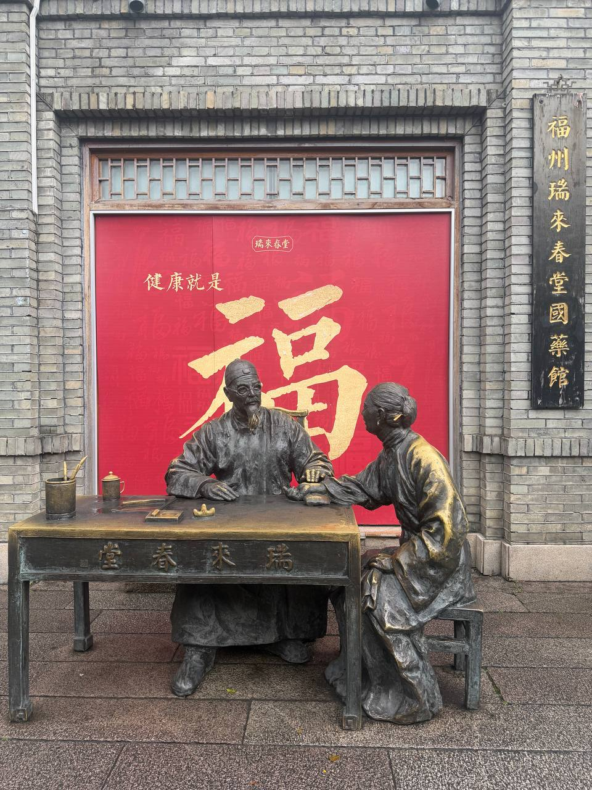
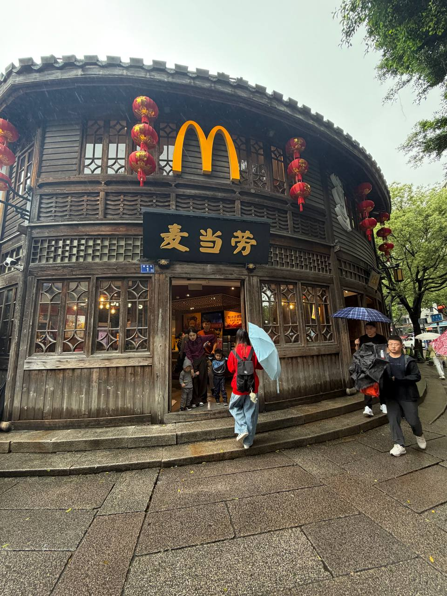
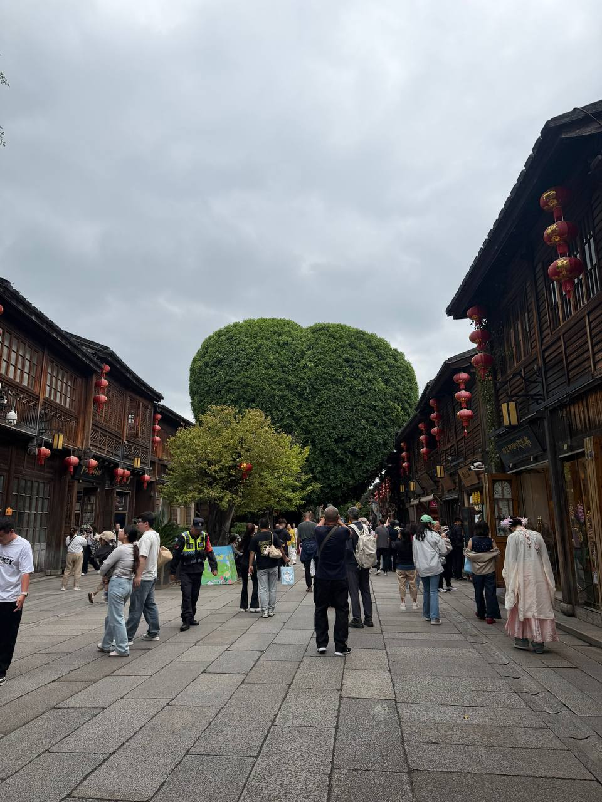
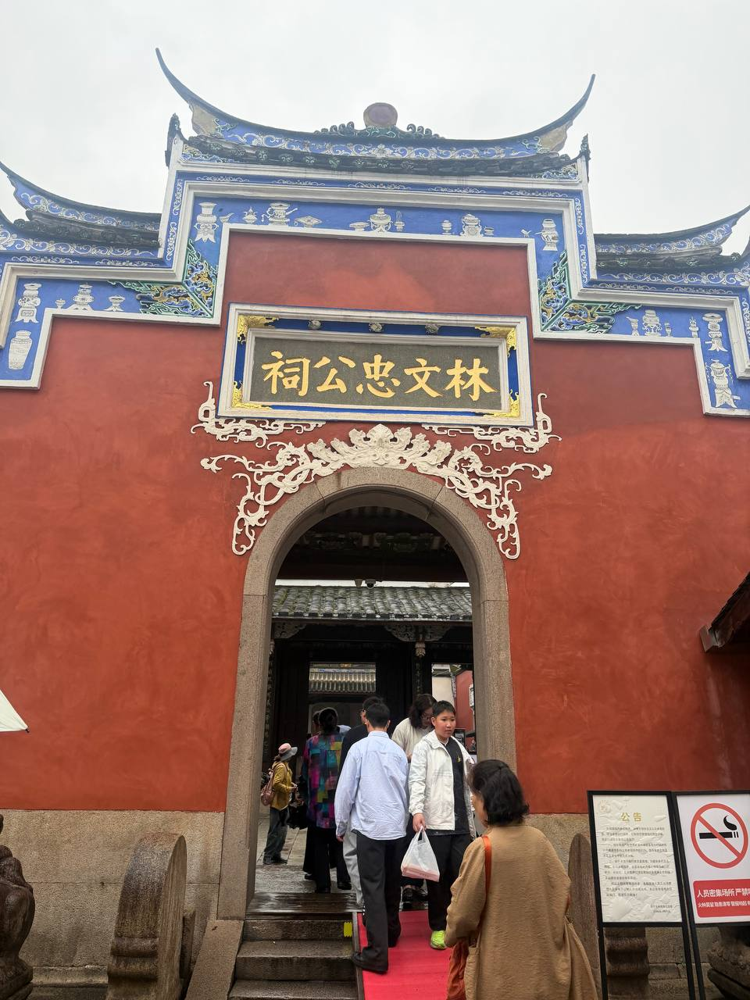
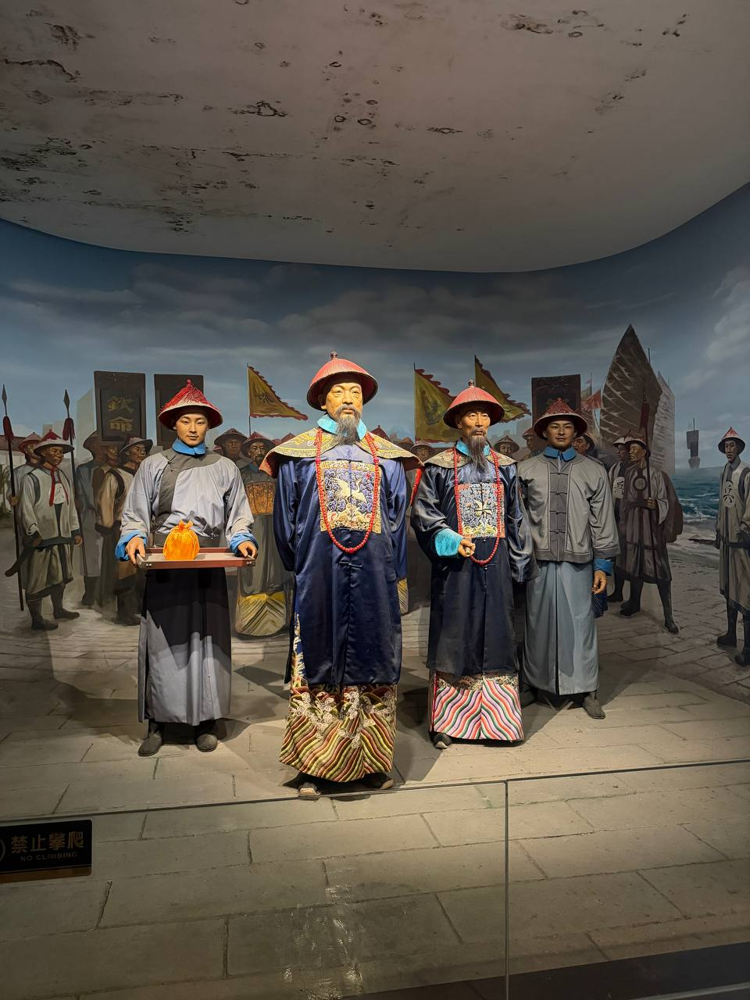

What to do in Fuzhou?
What does the city of good fortune have to offer?

I had a friend who was doing a semester exchange in Hangzhou at the same time of when I was doing mine in Hong Kong.
We wanted to hang out and explore a new place together, considering it was a rare opportunity for us to both be on exchange a the same time.
Fuzhou was a 5-hour journey on the High Speed Rail for both of us. I arrived in Fuzhou with a limited understanding of the area, as I chose to
visit primarily due to its geographical location. Little did I know it would surprise me greatly.
1. Visit San Fang Qi Xiang


2. Visit the Lin Ze Xu Memorial Hall
First of all, who is Lin Ze Xu?


He was a pretty cool guy.
3. There are two bus stops on campus
There is the North Bus Stop and the South Bus Stop. If I'd want to get to Hang Hau, I would walk to the North Bus Stop and take bus 11M. Going to Hang Hau first is also a smarter choice if my final destination is any where on Hong Kong Island (Blue Line). If I'd want to get to Sham Shui Po, Prince Edward or Mongkok instead, I would go to the South Bus Stop, where I can take the bus 91M which goes directly to Choi Hong MTR and Diamond Hill MTR.

4. How do I get to Shen Zhen?
I went to Shen Zhen a grand total of seven times during the school term. What's not to love?
Everything is more affordable and the food, the food was simply mouth-watering.


There are 2 ways you could get to Shen Zhen. You could go to Hong Kong West Kowloon MTR Station and take the HSR (High Speed Rail) to Shen Zhen. You can either purchase your train tickets on 12306 China Railway or on Trip.com.
Or you could take the MTR all the way to Lo Wu station instead. Either way, do remember to fill in your China arrival card before passing through immigration.
5. Take the Airport Bus
The cheapest way to the airport is by bus. If you are going to the Airport via MTR, be prepared to spend additional on the Hong Kong Airport Express Line. Fortunately for us, you could get off a stop earlier while taking bus 11M to Hang Hau and take bus A29 for a direct journey to the airport. If you stay at Jockey Hall, you could take bus E22A instead. Don't worry, all airport buses have a designated area to place your luggage. Plug in your earpiece and enjoy the ride.
6. What to eat in HKUST?
Bad news, the food on campus is not known to be the best. In my opinion, here are some decent food options in school.
1. China Garden


2. LG7 Mala Mi Xian

3. LG7 Breakfast Set

4. Canteen 2 BBQ Delights

5. Hungry Korean

Or you could cook. There is a supermarket located beside the LG7 Canteen called Fusion and you can buy groceries from there. However, it is a bit pricey. If you want to save more money, I would suggest getting your groceries from the supermarket at Hang Hau East Point City or Tseung Kwan O Shopping Malls instead.